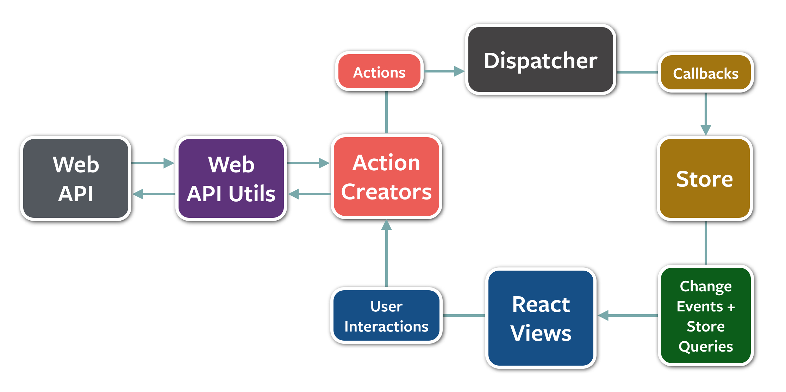
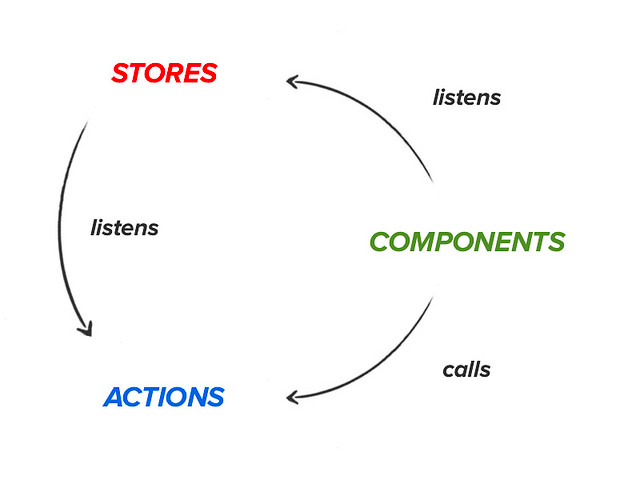
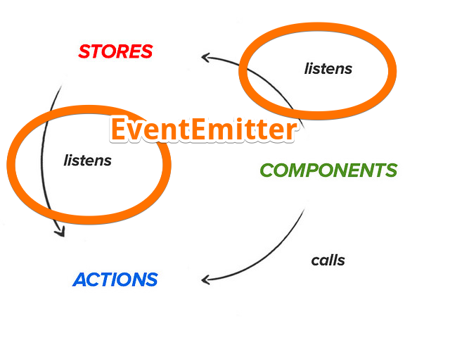
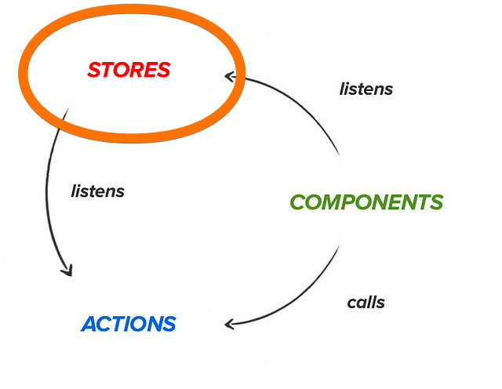
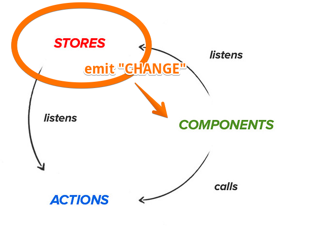
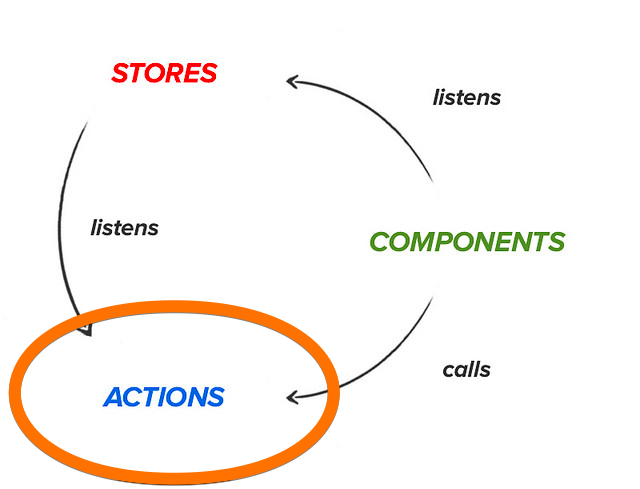
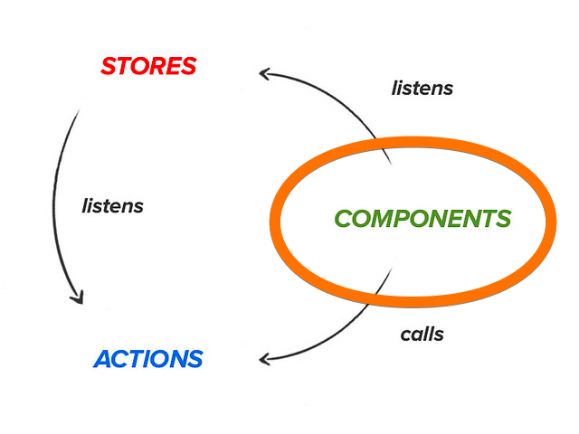
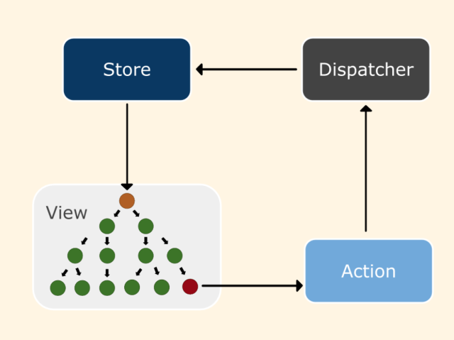
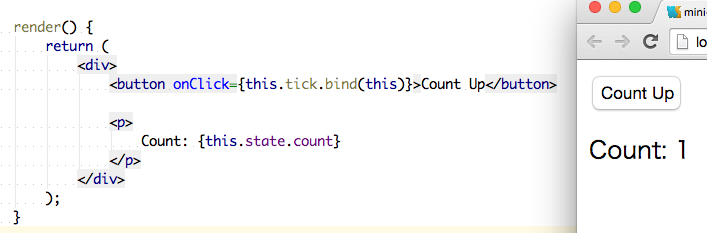
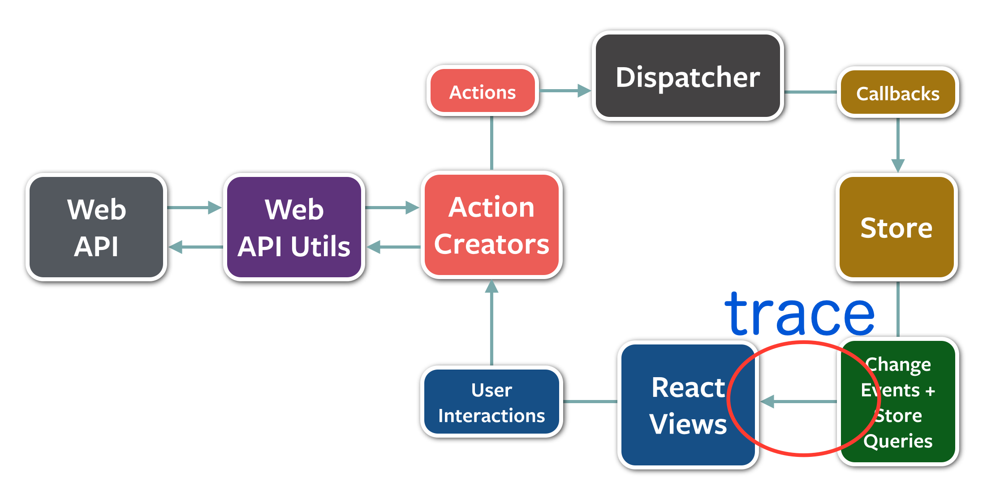

10分で実装するFlux
自己紹介

azu
@azu_re
Web scratch, JSer.info
Flux
/flˈʌks/
Fluxとは
- Facebookが提唱したSmalltalk MVCの焼き直し
- CQRS(Command Query Responsibility Segregation)と類似
- データが一方通行へ流れるようにするアーキテクチャ
- ウェブUIについてそれを適応する
今日の目的
- 小さなFluxの実装を作りながらFluxついて学ぶ
- Fluxの特徴: Unidirectional data flow
- 本当にデータが一方通行に流れるのかを確認する

Fluxでよく見る図
登場人物
- 何か色々いる
- Action Creators, Dispatcher, Store, React Views...
- Dispatcher = EventEmitterと今回は考える
- もっと実装的な視点から見てみる

実装イメージ
- Action、Store、Component(React)の3つが存在
- それを繋ぐのがEventEmitter(or Dispatcher)
実装イメージ
- StoreはActionをlisten
- -> Actionが持つEventEmitterを監視
- ComponentはActionをcall
- -> ActionがEventを発行
- ComponentはStoreの変更をlisten
- -> Store自身がEventEmitter
Fluxを実装してみよう
- Fluxを実装しながら小さなアプリを作ってみる
- クリックしたら、カウントが増えるだけのアプリ

EventEmitter

EventEmitter
- イベントリスナの登録/処理ができるモジュールを作る
#on: イベントtypeに対してコールバックの登録#emit: イベントtypeに登録されたコールバックの実装#off: イベントtypeに対してコールバックの登録解除
EventEmitter.js
export default class EventEmitter {
constructor() {
this._handlers = {};
}
on(type, handler) {
if (typeof this._handlers[type] === 'undefined') {
this._handlers[type] = [];
}
this._handlers[type].push(handler);
}
emit(type, data) {
var handlers = this._handlers[type] || [];
for (var i = 0; i < handlers.length; i++) {
var handler = handlers[i];
handler.call(this, data);
}
}
}
EventEmitter
- EventEmitterでStoreとAction、StoreとComponentを繋ぐ
- いわゆるオブザーブパターンに使う
- facebook/fluxではDispatcherが一部この役割を持ってる
- EventEmitter自体も合わせて使ってる
Dispatcher?
- Facebookのfluxモジュールが唯一提供してる機能
- EventEmitterに順序制御をつけたもの と理解
- 基本的にシングルトンで利用する事を意図したデザイン
- 今回は単純にしたかったのでEventEmitterだけで
Store

Store
- モデルみたいなもの
- あるイベントがやってきたら、State(内部の状態)を更新する
- イベントを経由しない書き込みを制限する
get*的なメソッドで外からStateを取れるようにする- StoreはEventEmitterを継承する
import Emitter from "./EventEmitter"
export default class Store extends Emitter {
constructor(dispatcher) { // dispatcherを受け取る
super();
this.count = 0;
// <--- observe event.
dispatcher.on("countUp", this.onCountUp.bind(this));
}
getCount() { // stateを取り出すメソッド
return this.count;
}
onCountUp(count) {
// dispatcherがemitされると呼ばれる
}
}
Store
- 内部Stateを更新したら"CHANGE"イベントを発行する
- 自分自身がEventEmitterのインスタンスなので
- self emit "CHANGE" -> Storeに対して
#onしてるものが呼ばれる - ComponentからStoreに
#onすることで、ComponentはStoreの変更を監視できる

import Emitter from "./EventEmitter"
export default class Store extends Emitter {
constructor(dispatcher) {
super();
this.count = 0;
dispatcher.on("countUp", this.onCountUp.bind(this));
}
getCount() {
return this.count;
}
onCountUp(count) {
this.count = count;
// emit "CHANGE" ---> self
this.emit("CHANGE");
}
}
Action(Creator)

Action(Creator)
- あるイベントを発行する関数
- emit "
"
- emit "
- ユーザーアクションから始まる非同期通信とかもここに
export default class ActionCreator {
constructor(dispatcher) {
this.dispatcher = dispatcher;
}
// "Emit" event ----> Store
countUp(data) {
this.dispatcher.emit("countUp", data);
}
}
Component

Componentの役割
- Viewの更新
- Storeの変更を監視する(Listen)
- Storeが自身の変更を"CAHNGE"イベントで伝えてくれる
- 後はStoreからデータを取ってきて描画すればいいだけ
Componentの役割
- ユーザーイベントの受付
- clickされた◯◯するといった動作
- イベントハンドラで対応するActionを呼べば良い
Component -> (call) -> Action -> (emit) -> Store#onHandler

Introduction To React─ Frontrend Conference から引用
import React from "react"
import ActionCreator from "./ActionCreator"
import Store from "./Store"
import EventEmitter from "./EventEmitter"
// EventEmitterのインスタンスをそれぞれ渡す
var dispatcher = new EventEmitter();
var action = new ActionCreator(dispatcher);
var store = new Store(dispatcher);
export default class Component extends React.Component {
constructor(props) {
super(props);
this.state = {count: store.getCount()};
// <---- Observe store's change
store.on("CHANGE", () => {
this._onChange();
});
}
_onChange() {
this.setState({count: store.getCount()});
}
tick() {
action.countUp(this.state.count + 1);
}
render(){ /* ... */ }
}
ボタンをクリックしたらカウントする

Fluxの特徴
- 一方通行のデータフローが形成できること
- ホントに先の実装は一方通行にデータが流れている?
- 実際に検証してみよう :eyes:
プログラムの動作フローを見るには
- コードの動きを見る
- 簡単に見るにはスタックトレースを見れば良い
- スタックトレースには関数が呼び出された順が入ってる
console.traceOR デバッガーでブレークポイントを貼る
スタックトレースを見てみる
- スタックトレースは呼ばれた順で積み上がる
- 最後に呼ばれた関数が1番目、その前の関数が2番目 ....
- 一周したところからコールスタックを見るとわかる
- ユーザーアクションをスタートとすると、Componentのアップデートがループの終わり
- => Componentの
_onChangeで取れば良さそう

コールスタックをconsoleへ出力
_onChange() {
console.trace();// <= onChangeまでのコールスタックを吐く
this.setState({count: store.getCount()});
}
tick() {
action.countUp(this.state.count + 1);
}
スタックトレース
動画: demo.mp4
// 上に行くほど新しい
_onChange @ Component.js:23
(anonymous function) @ Component.js:18
emit @ EventEmitter.js:23
onCountUp @ Store.js:22
emit @ EventEmitter.js:23
countUp @ ActionCreator.js:10
tick @ Component.js:28
// Start
呼び出しの流れ
Component#tick -> Action#CountUp -> Store#onCountUp -> Component#_onChange
- Component -> Action -> Store -> Componentへとデータが流れている
- つまり一方通行のデータフローが作成できた！
今回実装したもの
azu/mini-flux
もっと実装してみる?
- azu/material-flux - 今回mini-fluxをもう少し突き詰めたもの
- voronianski/flux-comparisonを実装みるのをオススメ
- flux-comparison app spec( unofficial )
まとめ
- 特別なライブラリや複雑な実装がなくてもFluxはできた
- 確かにデータは一方行に流れているのが確認できた
- オブザーブパターンに役割と名前が付いたもの = Flux
- Fluxを理解するにはFluxを実装してみるのが手っ取り早い
おまけ
Facebook flux
- FacebookのFluxモジュールはDispatcherという機能のみを提供
- 今回のEventEmitterに順序制御などを加えたもの
waitFor([id])というメソッドを持ち、発行されたイベントの依存関係を記述できる(Store依存関係に使われる)
なぜシングルトン?
- 確かにシングルトンだと実装は簡単
- けどテストがとても難しくなる = Jestじゃないとつらそう
- mini-fluxも途中までシングルトンで書いてた
- テストが書きにくかったのでシングルトンではなくなった
- mini-flux/test at master · azu/mini-flux
非同期処理はどこへ
- ユーザがボタンを押すなどの操作により通信が発生する場合はAction
例)
- FacebookのFlux Chat Example
- https://github.com/voronianski/flux-comparison
非同期処理はどこへ
逆にユーザーインタラクションを経由しなかったり、通信開始のトリガーが別である場合は、Store内から通信してStoreで完結しても良い
例)
1分ごとにサーバに問い合わせて最新のデータを取得して表示したい。 (StoreからXHRで取得して、Storeが変更されたことを通知する -> Viewの書き換え)
オススメFluxライブラリ
- 決定版はない
- 機能は大差ないので、インターフェースの好みによる
- デバッグのしやすさとかを考慮すると良さそう
- kenwheeler/mcfly
- Fluxの薄いラッパー
- acdlite/flummox